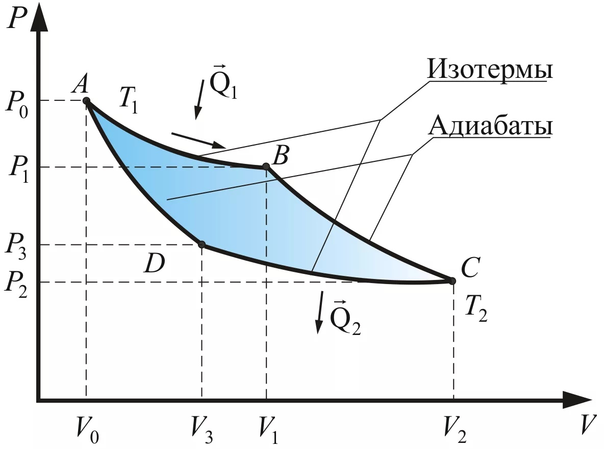

Термодинамика (греч. θέρμη – «тепло», δύναμις – «сила») – раздел физики, изучающий наиболее общие свойства макроскопических систем и способы передачи и превращения энергии в таких системах.

В термодинамике изучаются состояния и процессы, для описания которых можно ввести понятие температуры. Термодинамика (Т.) – это феноменологическая наука, опирающаяся на обобщения опытных фактов. Процессы, происходящие в термодинамических системах, описываются макроскопическими величинами (температура, давление, концентрации компонентов), которые вводятся для описания систем, состоящих из большого числа частиц, и не применимы к отдельным молекулам и атомам, в отличие, например, от величин, вводимых в механике или электродинамике.
Современная феноменологическая термодинамика является строгой теорией, развиваемой на основе нескольких постулатов. Однако связь этих постулатов со свойствами и законами взаимодействия частиц, из которых построены термодинамические системы, даётся статистической физикой. Статистическая физика позволяет выяснить также и границы применимости термодинамики.

Законы термодинамики носят общий характер и не зависят от конкретных деталей строения вещества на атомарном уровне. Поэтому термодинамика успешно применяется в широком круге вопросов науки и техники, таких как энергетика, теплотехника, фазовые переходы, химические реакции, явления переноса и даже чёрные дыры. Термодинамика имеет важное значение для самых разных областей физики и химии, химической технологии, аэрокосмической техники, машиностроения, клеточной биологии, биомедицинской инженерии, материаловедения и находит своё применение даже в таких областях, как экономика.